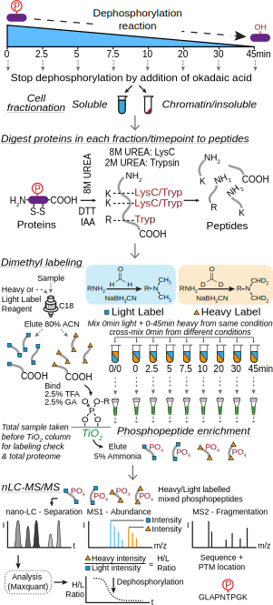
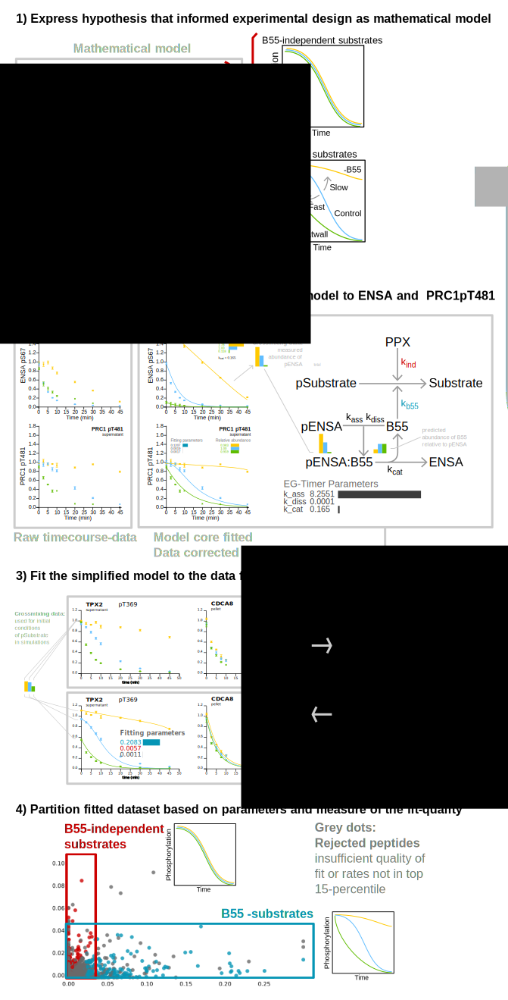

Visualisation-Dashboard
The Workspace is divided into two parts: the overview-panel on the left-hand side, and the details-panel on the right hand side.
Details-Panel
The details-panel is divided into five sections:
- Documentation-Tab
This is the tab that's active when you are reading this, and contains information on how to use this platform, as well as on the underlying experiments and models.
- Cards-View
In this tab, detiled plots of the timecourse data for individual peptides are collected.
- Profile-View
In this tab, profile views are collected. These are similar to the plots in the card-based view, but are optimised for comparison of sequence similarities, and lack details on the timecourses.
- Peptide-list
This tab contains a list of all the peptides in the dataset. Click on an entry to produce card and profile of it.
Interactions
- Connected views
Views relating to peptides are linked: Hovering over a point in the scatterplot, will highlight the corresponding card or profile, if the respective tab is active. Likewise, hovering over a card, profile or entry in the peptide-list will highlight the corresponding point in the dataset.
-
Searching for peptides
The search bar at the top of the details-panel allows you to search for peptides based on their gene-names or peptide ids. In order to generate a card and profile for a selected entry press enter. If you are searching for gene names, all corresponding matches in the dataset will be plotted.
- Downloading plots
The download icon on cards and profiles allows you to download the corresponding chart as svg. On Safari, this will open a new tab, which displays only the svg. On Chrome and Firefox, the svg should download automatically
- Destroying plots
The destroy button on cards and profiles allows you to remove them from the workspace. Items associated with the same peptide are connected, therefore clicking the destroy button on a card will also remove the associated profile.
The button to clear the entire workspace is located in the search bar of the details-panel.
- Look-up on pubmed
This button will open a new tab in your browser and look up the associated protein in the pubmed database.
Overview-Panel
The overview-panel is designed to provide you with a convenient interface for producing scatterplots of the dataset:
-
The two histograms next to the y axis and below the x-axis show the distribution of peptides along the that particular axis. The coloured set of bars correspond to the subset of peptides shown in the scatterplot.
-
The scatterplot area
Interactions
-
Zooming You can zoom in on the scatter plot by resizing the grey box overlaid on the histograms.
-
Hovering over a datapoint in the scatterplot will show you the id of the corresponding peptide, which is composed of the gene-name, the phosphorylation-site and an indication of whether it was seen in the supernatant or in the pellet-fraction.
-
Clicking a datapoint in the scatterplot will produce detailed plots that can be viewed in the details-panel
-
Drawing a rectangle on the scatterplot-area will select all points contained within its area and plot detailed plots that are accessible through the details-panel.
Browser Compatibility
47+
43+
8+
This tool works best with the most recent versions of Google Chrome, Firefox and Safari.
Mobile: A mobile-optimised version of this tool is under development
Analysis of dephosphorylation assays by mass spectrometry

Lys-C/trypsin digested peptide pools from each sample were dimethyl-labelled using cyanoborohydride and deuterated (heavy +32Da) or non-deuterated (light +28Da) formaldehyde. Samples taken at this stage were used to check labelling efficiency and for the total proteome. A pairwise mixing strategy was followed where a heavy sample from each time point was mixed 1:1 with the matched light t=0 sample. Phosphopeptides isolated from these mixed samples with titanium dioxide chromatography were analysed by nano-LC MS/MS. MaxQuant was used to identify peptide sequences and phosphorylation sites, to calculate the intensity of the matched heavy and light peptide pairs, and to assemble a total mitotic cell proteome dataset. This heavy/light ratio provides a relative quantitation of changes in phosphorylation state.
Mathematical model to describe substrate dephosphorylation by B55 dependent and independent pathways

1.) Expression of the hypothesis that informed the experimental design as mathematical model
In order to establish a meaningful framework for the analysis of the dataset, we express the assumptions that informed the design of the experiment as mathematical model. The dephosphorylation of a peptide in the dataset is modelled to be dependent on two alternative pathways: dephosphorylation by a constitutively active phosphatase, and PP2A:B55-dependent dephosphorylation, which is subject to regulation by the BEG-pathway. The latter is modelled as a complex-formation between PP2A:B55 and phosphorylated ENSA (determined by the rates k_ass and k_diss). ENSA is slowly dephosphorylated (k_cat) releasing unphosphorylated ENSA and active PP2A:B55.
2.) Obtaining an activity profile for PP2A:B55 by fitting the model to data for pENSA and PRC1-pT481
The B55- and Greatwall-depletion data are re-scaled based on the information on relative abundance of the phosphorylated peptides at timepoint 0, which is derived from the crossmixing experiments. Thus re-scaled, the data for ENSA and PRC1-pT481 (a well-validated substrate of PP2A:B55) dephosphorylation are used jointly to find an optimal parameterset for the model, based on a box-optimisation algorithm and an adequate objective function that expresses the agreement between model-simulation and experimental data.
3.) Fitting the simplified model to the data for each peptide in the dataset
Building on the optimal parameterset obtained above, we are able to predict the effective PP2A:B55-activity profile for all three conditions. This allows us to simplify the model substantially, making a large-scale fitting approach computationally tractable on a desktop computer.
The timecourses corresponding to B55- and Greatwall-depletion are again corrected based on the crossmixing data, and the simplified model is fitted to the timecourses of each peptide in the dataset. As a result, the dynamic behaviour of each peptide can be effectively described by three parameters:
- k_b55 - The B55-dependent rate of dephosphorylation
- k_ind - The rate of dephosphorylation independent of PP2A:B55
- The value of the objective function - A measure of the quality of the fit.
4.) Partitioning of the dataset based
Given that for most peptides eight timepoints were measured in three conditions with three experimental repeats, representing the data by three parameters is equivalent to a 24-fold compression of the dataset. This renders partitioning of the dataset based on the fitting parameters more robust and the correspondence of the parameters to well-defined patterns of behaviour expressed by the model makes the strategy easily interpretable.
We partition the dataset to find high-confidence PP2A-B55-dependent substrates as follows:
- Fitting-Quality Cutoff: We define a quality-threshold for the objective function at 0.005. Any peptide with a value of the objective function higher than the defined threshold is excluded from the search for high-confidence substrates.
- Non-zero PP2A:B55-dependent rate: As a second step, we exclude peptides from the search whose B55-dependent rate was zero, or smaller than the corresponding B55-independent rate.
- k_b55 in top 15-percentile of PP2A:B55-dependent rates: From the remaining subset, all peptides whose B55-dependent rate lies in the top 15-percentile of PP2A:B55-dependent rate of dephosphorylation are considered high-confidence PP2A:B55-dependent substrates.
Using this strategy, we identify 203 high-confidence B55-dependent susbtrates in the overall fitted dataset (7391 peptides). An analogous strategy is used to identify 153 high-confidence B55-independent substrates.